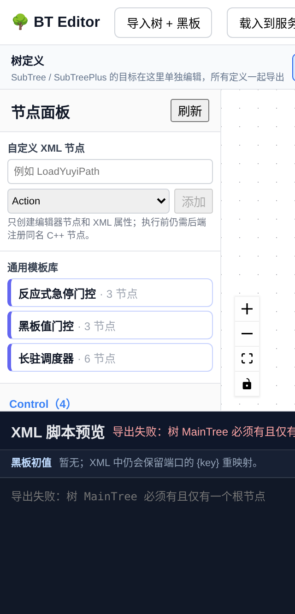
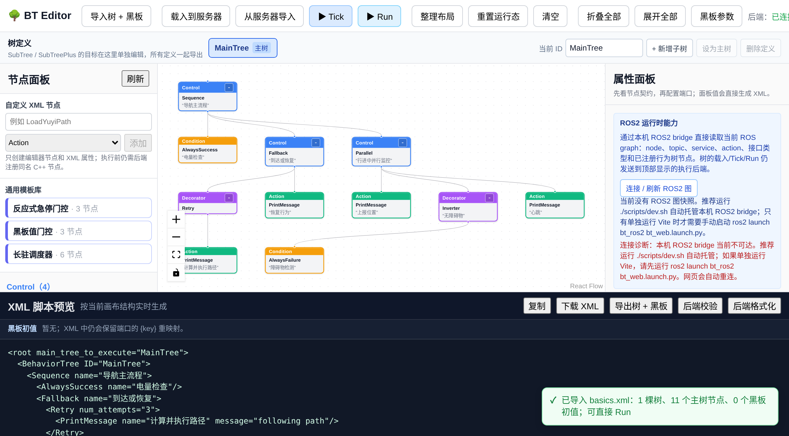
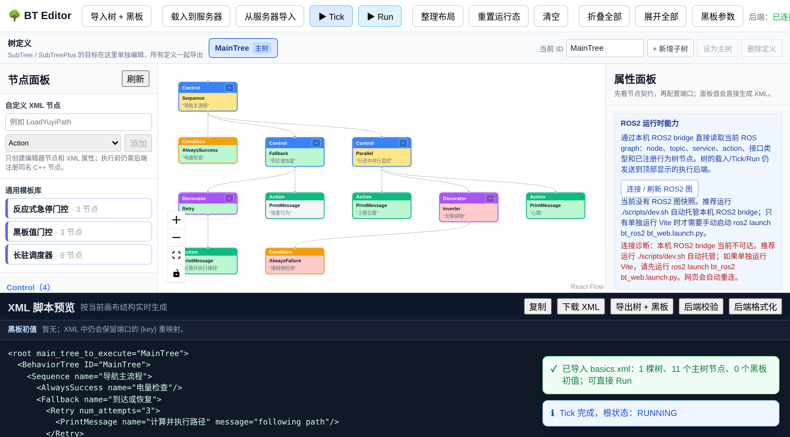

行为树基础¶
本节面向第一次接触行为树的人。我们把”序列 / 选择 / 装饰 / 并行”这四类 核心节点讲清楚：它们各自解决什么问题、返回值怎么传播、在 BehaviorTree.CPP-X 里对应哪个实现。看完这一节，再去翻 节点目录 的逐节点契约，就能把”概念”和”真实代码”对上。
为什么需要行为树¶
在行为树之前，机器人任务管理的主流方案是**有限状态机（FSM）**：用状态和 转移组织逻辑——“如果在充电状态且电量低于 20%，转移到充电行为”。
状态机的问题在**状态一多就变成蜘蛛网**。十几个状态之间的转移关系可能多达 上百条，改一个状态会影响一串转移，调试和维护都很痛苦。
行为树换了一种思路：不用状态转移，而是用节点组合来组织逻辑。每个节点 只关心自己那小块任务，节点之间如何协作由节点类型（而不是额外写死的转移 条件）决定。加一个新行为，只在树上挂一个新节点，不影响其他部分。这种 模块化让行为树成了游戏 AI（《光环 2》之后几乎成了标配）和机器人任务管理 （Nav2 用它编排整个导航流程）都采用的方案。
核心优势一句话概括：
模块化——新行为 = 新节点，不碰旧逻辑。
反应式——每个 tick 都从根重新评估，条件变了行为立刻变，不像状态机 需要显式写转移条件。
状态只有四种¶
行为树的每次执行脉冲叫 tick。每个节点 tick 后返回一个状态。本框架的
状态是封闭的四种（比常见的三态多一个 IDLE）：
状态 |
含义 |
|---|---|
|
尚未执行或已被 halt 复位。 |
|
异步动作还没完成，下一拍继续。这是行为树区别于普通状态机的关键。 |
|
节点任务完成，终结状态。 |
|
节点任务失败，终结状态，父节点据此决定下一步。 |
节点分两大类¶
控制节点（Control）：负责”怎么组织子节点”，可以有多个或一个子节点。
执行节点（Leaf）：真正干事，没有子节点，细分为 条件 和 动作。
项目里的节点类型枚举分四档：Control / Decorator / Action /
Condition，正好覆盖上面两类。编辑器的节点面板就是按这四类分组的，分组和
计数来自后端 GET /api/nodes 的真实 manifest：
{kind=link}

四种基本控制节点¶
下面四种是行为树的基石。每种都标注了在 BehaviorTree.CPP-X 里的对应类和 注册名，方便对照 节点目录。
序列节点 Sequence（”与”语义，→）¶
子节点从左到右依次执行，全部成功才成功；任一失败即失败。类似逻辑与 AND。
真实实现：bt_nodes/control/sequence_node.hpp``（注册名 ``Sequence）。
Sequence
├── 检查电量充足
├── 计算路径
└── 执行导航
检查电量失败 → 后面的计算路径和执行导航都不做，整棵序列立即失败。
这个节点是**有状态**的：子节点返回 RUNNING 时保留游标，下一拍从该
子节点续跑，而不是每拍从头重启。这一点很重要——如果子节点是耗时的异步
动作（比如导航），每拍从头重跑会导致语义错误。
选择节点 Fallback（”或”语义，?）¶
子节点从左到右依次尝试，遇到第一个成功即成功；全部失败才失败。类似 逻辑或 OR，从左到右是优先级从高到低。
真实实现：bt_nodes/control/fallback_node.hpp``（注册名 ``Fallback）。
Fallback
├── 直接到达目标
├── 重新规划路径
└── 执行恢复行为
直接到达成功 → 后面步骤不再执行。到达失败 → 尝试重新规划。规划也失败 →
执行恢复行为。任何一级子节点返回 RUNNING，整个 Fallback 也返回
RUNNING 并暂停在这里。
并行节点 Parallel（⇉）¶
逻辑上”同时”推进所有子节点，按**阈值**判定整体结果。在 BehaviorTree.CPP-X 里，用户配置两个整数端口：
success_count``（默认 ``-1，表示全部成功）。failure_count``（默认 ``1，表示任一失败即失败）。
真实实现：bt_nodes/control/parallel_node.hpp``（注册名 ``Parallel）。
Parallel success_count="2"
├── 导航到目标位置
├── 持续检测障碍物
└── 上报当前位置
三个子任务并行推，2 个成功就算整棵并行成功。
备注
这里的”并行”是**单线程逻辑并行**：同一拍，顺序 tick 每个子节点，用到
RUNNING 状态保持未终结子节点跨拍推进。它**不是**真正的多线程。
这是行为树并行节点的标准做法。真正需要多线程时，应在动作节点内部做
异步，而不是指望 Parallel 开线程。成功与失败阈值同时满足时，成功优先。
反应式变体：ReactiveSequence / ReactiveFallback¶
前面说过 Sequence 和 Fallback 是**有状态**的：子节点返回 RUNNING
时保留游标续跑。这在”动作不该被打断”时是对的，但在”前置条件随时可能变化”
时就不够了——比如急停开关按下时，正在跑的导航动作必须立刻中止。
本框架为此提供了两个反应式变体，它们在子节点 RUNNING 时**立即 halt 并把
游标复位到 0**，下一拍从第一个子节点重新评估：
控制节点 |
与基础版的差异 |
真实实现 |
|---|---|---|
|
|
|
|
|
|
典型用法是把条件放在最前，动作放在后面：
<ReactiveSequence name="急停门控">
<CheckBool key="e_stop_clear" expected="true"/>
<Delay delay_ms="5000"/>
</ReactiveSequence>
e_stop_clear 一旦变假，Delay 会被立即 halt，而不是等它自然跑完。
如果这里换成普通 Sequence，Delay 返回 RUNNING 后游标就停在它
身上，条件根本不会被重新检查。
备注
“反应式”这个词在行为树文献里指的就是这件事：每拍从根重新评估。本框架把
它做成显式的节点类型，而不是让所有 Sequence 都变成反应式——因为
“不该被打断的动作”同样常见，两种语义都要能表达。选择哪种取决于你希望
前置条件在动作执行期间是否继续生效。
至此控制节点共 6 种：Sequence、Fallback、Parallel、
PrioritySelector、ReactiveSequence、ReactiveFallback。
前三种是本节讲的基础语义，后三种解决抢占和反应式重评估。
装饰节点 Decorator（◇）¶
装饰节点**只有一个子节点**，对子节点的结果做修饰或控制执行方式。本框架 内置八种：
装饰器 |
作用 |
真实实现（注册名） |
|---|---|---|
|
反转结果： |
|
|
子节点失败时最多重试 N 次（ |
|
|
子节点成功后重复若干次（ |
|
|
强制把子节点终态转成成功（ |
|
|
强制把子节点终态转成失败。 |
|
|
按 tier（ |
|
|
子节点 |
|
|
与上一个对称： |
|
备注
Repeat 和 KeepRunningUntilFailure 容易混淆：Repeat 在子节点
成功时**计数**并继续，到次数就结束；KeepRunningUntilFailure 对成功
不计数，只在失败时停。前者是”重复 N 次”，后者是”一直跑到出错”。
典型例子：抓取失败最多重试 3 次。
<Retry num_attempts="3">
<RequestGrasp/>
</Retry>
注意 Retry 对”失败的完整尝试”计数，RUNNING 不消耗次数；0 仍
执行一次（首次照样执行，失败后不再重试）。
条件取反用 Inverter 很常见——把一个返回真的条件包成返回假：
<Sequence>
<Inverter>
<CheckBool key="is_ready" expected="true"/>
</Inverter>
<StartWork/>
</Sequence>
叶子节点：条件与动作¶
控制节点下面的叶子节点才是真正干活的，分两种：
条件节点 Condition——检查某个条件是否满足（电量是否充足、目标是否 可见）。瞬时返回
SUCCESS/FAILURE，不耗时。动作节点 Action——执行一个具体动作（发送速度指令、调用规划服务、 发提示音）。通常需要时间，返回
RUNNING直到完成。
条件节点常见的内置实现有 CheckBool、CompareBlackboard、
ScalarThreshold、BlackboardExists、CooldownCondition；
动作节点有 SetBlackboard、SetBool、Counter、Delay、
PrintMessage 等，契约见 节点目录。
执行机制：tick 怎么走¶
行为树从根节点开始，按深度优先遍历。每个 tick（通常 10~20ms 一次）执行 一遍整棵树。各节点处理返回值的方式：
Sequence：从第一个子节点开始；子节点
RUNNING时保留游标续跑，FAILURE立即失败并复位。Fallback：从第一个子节点开始；
FAILURE尝试下一个，RUNNING暂停在这里。Decorator：先执行唯一的子节点，再按装饰规则处理返回值。
叶子：条件瞬时返回；动作可能返回
RUNNING。
这样一个简化版序列节点的 tick 逻辑就能理解（真实代码见
bt_nodes/control/sequence_node.hpp）：
NodeStatus tick() override {
while (current_child_idx_ < children_.size()) {
auto& child = children_[current_child_idx_];
const NodeStatus s = child->executeTick();
if (s == NodeStatus::RUNNING) {
return NodeStatus::RUNNING; // 异步未完成：保留游标
}
if (s == NodeStatus::FAILURE) {
haltChildren();
current_child_idx_ = 0;
return NodeStatus::FAILURE;
}
++current_child_idx_; // 成功，推进下一个
}
current_child_idx_ = 0;
return NodeStatus::SUCCESS; // 全部成功
}
黑板与端口：节点间怎么通信¶
节点本身保持”无状态可复用”。节点之间、节点与外部世界之间交换数据走
黑板（Blackboard）——一个以字符串为 key、类型安全（std::any +
类型擦除校验）的共享 KV 存储。真实实现见 bt_core/include/bt_core/blackboard.hpp。
节点不直接碰黑板 key，而是通过**端口名**间接访问，端口名在树文件里可被 重映射到不同的黑板 key：
<ComputePath goal="{goal}" path="{path}"/>
<FollowPath path="{path}"/>
ComputePath 把算好的路径写到黑板 path，FollowPath 从黑板读
path，两个动作节点通过黑板通信，互不直接依赖。
警告
端口只写**字面量**（如 message="hello"）时，值保存在节点本地
port_values，不进共享黑板；只有写成 {key} 形式才重映射到
黑板。这是刻意设计——否则两个 <PrintMessage message="A"/> 和
<PrintMessage message="B"/> 会因为都用端口名 message 当 key 而在
黑板里互相覆盖。这也是 BehaviorTree.CPP 私有端口语义的由来。
完整例子：一棵简化导航树¶
下面这棵树的形状对应 Nav2 里”带重规划的导航”思路。其中
ComputePath / FollowPath 是业务自定义节点（本框架不含），仅示意
结构；其余都是真实的规范节点。
<root main_tree_to_execute="MainTree">
<BehaviorTree ID="MainTree">
<Sequence name="navigate_with_replanning">
<CheckBool key="battery_ok" expected="true"/>
<Retry num_attempts="3">
<Sequence>
<ComputePath goal="{goal}" path="{path}"/>
<FollowPath path="{path}"/>
</Sequence>
</Retry>
<ClearBlackboard key="path"/>
</Sequence>
</BehaviorTree>
</root>
执行流程：先检查电量；电量够则尝试”算路径 + 走路径”，任一失败就重试，
最多 3 次；3 次都失败则清除黑板的 path 清理现场。整棵树结束后，等下一
个 tick 重新从根评估。注意黑板变量 {goal} 和 {path}——规划节点
写入、跟随时读取，两个节点靠黑板通信而不是直接耦合。
扩展调度能力¶
除了四类基础节点，本框架还额外提供两个与调度相关的节点，适合实际机器人 场景：
PrioritySelector——每拍从第一个子节点重评，高优先级输入抢占低优先级 运行分支（不是简单从左到右扫一次），见bt_nodes/control/priority_selector_node.hpp。TickRate——给子树分级降频（critical 每拍、normal 每 2 拍、background 每 5 拍），避免低优先级逻辑拖慢整棵树，见bt_nodes/decorator/tick_rate_node.hpp。
这两者的完整用法见 单树优先级与分级 Tick 调度。
高频追问¶
Q：行为树和状态机的核心区别是什么？ A：状态机用状态转移组织逻辑，行为树用节点组合组织逻辑。行为树的优势是 模块化（加新行为不改旧逻辑）和反应式（条件变了行为自动变）。
Q：行为树的 tick 频率一般设多少？
A：取决于任务需求和节点成本。Nav2 默认约 10~20Hz（50~100ms 一次）。避障
要求高可以跑快一点；用 TickRate 可以把非关键子树降频，无需全局加速。
Q：行为树怎么处理并发任务？
A：用 Parallel。但它的子节点共享同一个执行线程，是逻辑并行，不是
真正的多线程。需要真多线程时，在动作节点内部实现异步。
Q：行为树的黑板是什么？
A：行为树的全局数据共享机制。节点之间通过黑板读写数据，比如规划器把路径
写到黑板、控制器从黑板读路径。黑板避免了节点之间的直接耦合。本框架的黑板
支持类型检查，端口映射区分字面量和 {key} 重映射。
Q：看到控制节点里还有”选择”和”序列”，它们和装饰节点有什么区别？ A：序列/选择/并行是**控制节点**，可以有多个子节点，决定”怎么组织多个 子节点”；装饰节点**只有一个子节点**，决定”怎么修饰一个子节点的结果”。 两者角色不同，不能混用。
动手：跑一棵真实的树¶
概念看完就该跑起来。下面每条命令都在本仓库实测通过，产出可以直接对照。
先构建核心库、节点插件和示例程序：
cmake -S . -B build \
-DBT_BUILD_NODES=ON -DBT_BUILD_SERVER=ON -DBT_BUILD_TESTS=ON -DBT_BUILD_EXAMPLES=ON
cmake --build build
或者直接用一键脚本（额外装前端依赖和 Playwright 浏览器）：
./scripts/bootstrap.sh
最小控制流：Sequence + Fallback¶
examples/trees/minimal_sequence_fallback.xml 是最小的”选择 + 序列”闭环：
<root main_tree_to_execute="MinimalTree">
<BehaviorTree ID="MinimalTree">
<Fallback name="choose_patrol_or_idle">
<Sequence name="patrol_path">
<AlwaysSuccess name="precheck_ok"/>
<PrintMessage name="say_patrol" message="patrol path selected"/>
</Sequence>
<PrintMessage name="say_idle" message="fallback idle path"/>
</Fallback>
</BehaviorTree>
</root>
运行（Linux 用 .so，macOS 用 .dylib）：
./build/bin/example_load_xml \
./build/lib/libbt_nodes.so \
./examples/trees/minimal_sequence_fallback.xml
实际输出：
已加载插件，注册节点数: 34
树构建完成，节点数: 5
=== 执行行为树 ===
[状态变化] 节点#3: IDLE -> SUCCESS
[PrintMessage] patrol path selected
[状态变化] 节点#4: IDLE -> SUCCESS
[状态变化] 节点#2: IDLE -> SUCCESS
[状态变化] 节点#2: SUCCESS -> IDLE
[状态变化] 节点#1: IDLE -> SUCCESS
=== 根节点结果: SUCCESS ===
对照前面的概念：Fallback 的第一个子节点（Sequence）成功了，所以
第二个 PrintMessage``（idle 分支）**完全没有执行**——输出里只有
``patrol path selected。这就是”或”语义的短路。
观察 RUNNING：异步语义¶
examples/trees/diagnostic_demo.xml 里有 Delay delay_ms="20"，能看到
真实的跨 tick RUNNING：
./build/bin/example_load_xml \
./build/lib/libbt_nodes.so \
./examples/trees/diagnostic_demo.xml
输出末尾能看到 RUNNING -> SUCCESS 的转换：
[状态变化] 节点#7: RUNNING -> SUCCESS
[INFO] 诊断流程完成，目标缓存已清理
[状态变化] 节点#1: RUNNING -> SUCCESS
=== 根节点结果: SUCCESS ===
注意根节点 #1``（那个 ``Sequence）也经历了 RUNNING——因为它的子节点
Delay 返回 RUNNING 时，序列保留游标并把 RUNNING 向上传播。
example_load_xml 用 tree.tickWhileRunning() 反复 tick 到收敛，这正是
真实机器人里定时器周期 tick 的简化版。
小技巧
想验证”序列是有状态的”，把 delay_ms 调大到 2000 再跑一次。你会看到
Delay 之前的节点**不会**被重复执行——它们的 SUCCESS 已经被游标记住了。
Web 编辑器：可视化搭建¶
命令行能跑树，但拖拽搭树、看运行态上色更直观。这是本框架的可视化闭环。
一键启动¶
./scripts/dev.sh
脚本会构建后端、加载 libbt_nodes 插件、启动 Vite，并打印两个地址：
后端 API：
http://127.0.0.1:8080编辑器：
http://127.0.0.1:5173
浏览器打开 5173 就能看到编辑器。退出时脚本会清理子进程。
手动启动（两个终端）¶
需要自定义端口或插件路径时分开启动：
# 终端 1：后端 + 插件
./build/bin/bt_server 127.0.0.1 8080 ./build/lib/libbt_nodes.so
# 终端 2：前端
cd bt_editor && npm run dev
bt_editor/vite.config.ts 默认把 /api 代理到 http://localhost:8080；
后端换地址时给 dev/preview 设置 BT_BACKEND_URL。本地树文件 API 默认限制在
examples/trees，换目录用 BT_TREE_WORKSPACE=/path/to/trees。
四种基本节点长什么样¶
下面这棵树把本节讲的四类节点放在了一起：外层是”与”语义的 Sequence，
中间是”或”语义的 Fallback 搭配装饰器 Retry，内层是按阈值判定的
Parallel 搭配装饰器 Inverter，叶子则是条件和动作。对照画布看概念会
直观很多：
{kind=link}

点 Tick 执行一拍后，每个节点按状态上色。这张图刻意混合了四种状态，
正好对应前面的状态表：绿色 SUCCESS、黄色 RUNNING、红色 FAILURE、
灰色 IDLE 表示本拍没走到：
{kind=link}

注意被 Inverter 包裹的那个条件：子节点 AlwaysFailure 返回
FAILURE，装饰器把它反转成 SUCCESS 向上汇报。画布同时显示两者各自的
真实状态，这比只看最终结果更容易理解装饰器在做什么。
备注
这两张图由 bt_editor/e2e/basics-screenshots.spec.ts 用 mocked API
生成，固定 viewport 和固定 manifest，所以不受本机端口、进程和数据波动
影响。重建方式见下面的”文档配图怎么重建”。
在界面里做什么¶
编辑器的节点面板**不是硬编码的**——启动时拉 GET /api/nodes，把后端真实
注册的节点按 Control/Decorator/Action/Condition 分组列出。新写的插件节点重启
后端就会自动出现。
典型工作流：
操作 |
说明 |
|---|---|
拖拽建树 |
从左侧面板拖节点到画布。连线时前端强制结构约束：叶子无子节点、 装饰器恰好一个子节点、控制节点多子节点、禁止自环。 |
编辑端口 |
选中节点后属性面板按 manifest 渲染控件。普通输入端口可在
“固定值 / 读取黑板”之间切换；输出端口填目标黑板键，面板生成 |
|
实时显示当前画布导出的 XML，改一处立刻看到脚本变化。 |
|
按树层级重新排版画布，保持兄弟节点稳定顺序。 |
|
调 |
|
|
|
填写当前树的启动初值（ |
|
分别下载纯 XML 和版本化 |
备注
./scripts/dev.sh 启动的普通 bt_server 只加载 bt_nodes 里的非 ROS
插件节点。它**不能**执行需要 rclcpp::Node 句柄的 ROS2 节点（ReadScalar、
IsFlagTrue、RosTopicAction 等）。那些 XML 要交给 BtExecutorNode
运行，见 ROS2 回充教程。编辑器里能看到 ROS manifest 是为了
设计和端口配置，不代表普通后端具备 ROS 执行能力。
后端 API 一览¶
编辑器的每个动作背后都是一个 HTTP 接口，也可以直接用 curl 调：
GET /api/health 健康检查
GET /api/nodes 枚举已注册节点 + 端口 manifest
POST /api/tree/load XML -> 构建树
POST /api/tree/validate 只校验，不替换当前树
POST /api/tree/format 稳定缩进格式化
GET /api/tree/export 当前树 -> XML
POST /api/tree/tick tick 一次，返回每节点状态
POST /api/tree/run 跑到终态，返回状态变化序列
GET /api/tree/structure 当前树的父子结构
GET /api/trees 列出 workspace 里的树文件
GET /api/tree/open?name=... 读取一个树文件
POST /api/tree/save 保存树文件
完整契约见 API 参考。
GitHub Actions 与文档发布¶
这个仓库的验证和文档站都由 GitHub Actions 驱动。理解这两条流水线，改完 代码或文档才知道该看哪个 job。
两条工作流¶
工作流 |
文件 |
触发 |
做什么 |
|---|---|---|---|
|
|
push 到 |
在 ubuntu-latest 和 macos-latest 双平台跑
|
|
|
push 到 |
|
ci 的 ./scripts/test.sh 覆盖 C++ 构建、Release ctest、ASan/UBSan
focused suite、SDK 外部 consumer、bt_server 真实进程 API smoke、ROS2 launch
语法解析、Vitest、前端 build、mocked Playwright 三轮 + live-backend + 截图
hash gate，以及 Sphinx HTML 和 linkcheck。
本地先跑，别等 CI¶
CI 跑的就是仓库里的脚本，本地完全可以复现：
./scripts/test.sh # 等价于 ci 工作流的核心步骤
./scripts/build_docs.sh # Sphinx HTML + linkcheck（warning-as-error）
./scripts/build_pages.sh # 额外产出 docs/_build/pages 发布产物
只改文档时至少跑 ./scripts/build_docs.sh。它用 -W 把警告当错误，
所以标题下划线过短、坏掉的 :doc: 交叉引用都会当场失败，而不是等
pages 工作流红掉才发现。
文档配图怎么重建¶
本页的界面截图不是手工截的，而是由 Playwright 用 mocked API 复现产出，因此 改了 UI 之后能一条命令重建：
cd bt_editor
npm run screenshots
这条命令做三件事：先 npm run build 确保验证的是当前前端产物，再用
BT_UPDATE_SCREENSHOTS=1 跑 docs-screenshots.spec.ts 和
basics-screenshots.spec.ts，最后跑 npm run screenshots:check 门禁。
门禁（e2e/check-screenshot-hashes.mjs）会拒绝：
文件缺失或过小（< 10KB，通常意味着截了一张空白页）。
不是合法 PNG（校验签名和 IHDR 头）。
尺寸与预期不符（防止 viewport 或
deviceScaleFactor被改动后静默产出不同尺寸）。出现内容完全相同的两张图（防止”四个状态”其实是同一屏截了四次）。
# 只校验，不重新生成
npm run screenshots:check
# 产出到临时目录，不动已提交的图片
BT_UPDATE_SCREENSHOTS=1 BT_SCREENSHOT_DIR=/tmp/shots \
npx playwright test e2e/basics-screenshots.spec.ts --project=chromium
警告
docs/blog/screenshots/ 下的 05 到 14 是早期手工补充的图片，
没有对应的生成 spec，因此**不在** hash 门禁清单内。新增文档配图请写进
spec 并登记到门禁，不要直接放一个无源 PNG 进仓库——否则 UI 改动后没人
知道哪张图已经过期。
这些截图用的是 mocked API，只保证界面渲染稳定， 不能 当作后端功能证据。 浏览器到真实 C++ 后端的闭环由独立的 live 项目验证：
cd bt_editor
npm run test:e2e:live
它会真启动 bt_server + libbt_nodes，检查真实 manifest、示例
load/validate/tick、Run 和严格 XML 错误。详见 编辑器与 Playwright。
Pages 发布模型¶
GitHub Pages 不直接发布 docs/ 源码或 docs/_build/html。发布链路是：
scripts/build_pages.sh构建 HTML 并筛选出干净产物到docs/_build/pages。actions/upload-pages-artifact@v3上传该目录。actions/deploy-pages@v4经github-pagesEnvironment 发布。
产物根目录必须直接含 index.html 和 .nojekyll``（GitHub Pages 只有在
禁用 Jekyll 时才提供以 ``_ 开头的路径），另含 _static/、_images/、
其余 HTML 和 searchindex.js。构建缓存、_sources/、.buildinfo 和
objects.inv 不进 artifact。
仓库需要的远端设置¶
自动发布依赖两处 GitHub 设置，它们 不能 在 workflow YAML 里声明：
Settings -> Pages：Build and deployment -> Source选GitHub Actions。Settings -> Environments -> github-pages：在Deployment branches and tags里允许main。
看懂 Deploy 失败¶
如果 Build Pages artifact 成功、而 Deploy to GitHub Pages 报：
Branch "main" is not allowed to deploy to github-pages due to environment protection rules.
说明 Sphinx 构建和 artifact 都没问题， 唯一 失败点是 Environment 的分支
规则。按上一节允许 main，然后在失败的 run 里点 Re-run failed jobs。
不需要改 Sphinx、重生成截图或切到 gh-pages 分支。
用 CLI 查状态¶
装了 gh 可以不开浏览器就确认部署结果：
# 最近几次 pages 运行
gh run list --workflow=pages --branch=main --limit 5
# 看某次 run 的每个 job 和步骤
gh run view <run-id>
# 只看结论
gh run view <run-id> --json status,conclusion --jq '{status,conclusion}'
# 手动触发一次发布
gh workflow run pages --ref main
两个 job（Build Pages artifact 和 Deploy to GitHub Pages）都是
success 才算真正发布成功。只看整体 conclusion 会漏掉”构建成功、
部署被 Environment 拦住”这种情况。
警告
pages 工作流的 concurrency 组是 pages 且
cancel-in-progress: true。连续 push 文档时，前一次运行会被取消，
这是预期行为，不是失败。
备用分支模式¶
只有把 Settings -> Pages 的 Source 明确改成 Deploy from a branch
之后，才使用 gh-pages 分支：先跑 ./scripts/build_pages.sh，再把
docs/_build/pages/ 的**内部内容**放到 gh-pages 根目录。
GitHub Actions 模式和 gh-pages 分支模式二选一。本仓库的标准模式是
GitHub Actions。更多细节见 GitHub Pages 发布。
下一步¶
概念清楚了，接下来：
到 节点目录 看每个内置节点的逐项契约（端口、状态转换、失败 边界、最小 XML）。节点清单以运行时
GET /api/nodes为准，不要依赖 文档里的固定数字。到 单树优先级与分级 Tick 调度 看优先级抢占与 tick 分级，以及多输入抢占怎么收敛到 一棵树。
到 快速开始 走完整的一键准备、验证和启动流程。
到 编辑器与 Playwright 看编辑器的浏览器级验证怎么做。
到 开发流程 固化”加节点 - 补测试 - 跑 gate”的开发循环。
行为树的核心信条只有一句：节点只做自己的事，如何协作由节点类型决定。 把这条守住，后面设计模式和实战应用就好懂了。